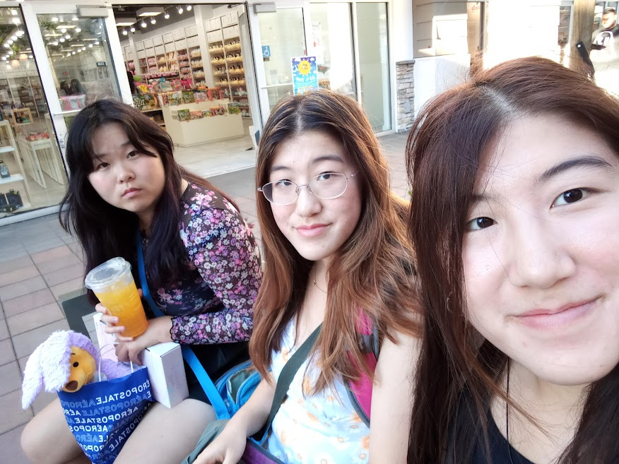

Becky Xin
3rd Year Psychology Student
I am originally born in Canada. Then I moved to the States when I was 11. I went to Albany High, which is around 15 minutes
from Berkeley. I have an older brother, and a younger twin sister.
3 Favorite things to eat in Berkeley
- Imm Thai
- Ike's Sandiwiches
- Feng Cha

Homework 1 Part 2
- I learned that there are practices that can increase one's intuition about design. I also learned that taking apart common apps can be helpful for this.
- My favorite part of the article was the animations of the apps being taken apart. It made it really easy to imagine the design process.
- "If you could see the harsh drop shadows and unnecessary flourish I added to things, you would gasp in horror."
- 6